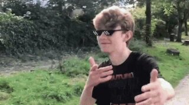

about hpa progress plexus
hpa progress plexus (HPP) is a H1 P2 based intrenat protocol. everyone loves it cuz, they can browse, watch, interact with pages even if offline, without connecting to the net. it also brings good ol' vibes of the early net! make webpages with html5 and css3 offline,add pages sorce codes. make ur own, its your choice :D please remember that if you are using this in a browser the embed media (eg. Vidtube vids musicaly songs) wont work cuz icand link,em in my github (idk why) feel free to edit the sorce code!
if you want to support the project please favourite it on github,thanks :D


If youtube didn't exist and all theese proggramming channels (eg. brocode,code with mosh, lewis) i would'nt have made this project. without yt stack overflow an all theese channels,hpp would'nt be possible. Thanks for using hpp to make the internet great again :)
ver. 1.8.9 (nightly)